TORNEOS
Estados Unidos
National Football League (NFL): Fundada en 1920 como la American Professional Football Association, adoptó su nombre actual en 1922. La temporada regular consta de 17 partidos por equipo, seguidos de los playoffs que culminan en el Super Bowl, el evento deportivo más visto en Estados Unidos.Ligas históricas:
American Football League (AFL): Establecida en 1960, la AFL compitió directamente con la NFL hasta su fusión en 1970, momento en el que sus equipos se integraron en la actual Conferencia Americana (AFC).
United States Football League (USFL): Operativa entre 1983 y 1985, la USFL intentó establecerse como una liga de primavera, pero cesó sus operaciones debido a dificultades financieras.
XFL: Inició en 2001 con una temporada, y aunque tuvo breves resurgimientos en 2020 y 2023, enfrentó desafíos financieros y de audiencia.
Fútbol americano colegial: La NCAA organiza competiciones universitarias, siendo la División I la más destacada. El College Football Playoff determina al campeón nacional, y partidos como el Rose Bowl y el Sugar Bowl son eventos tradicionales de gran relevancia.
National Football League
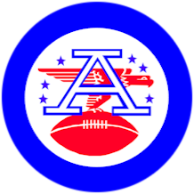
American Football league
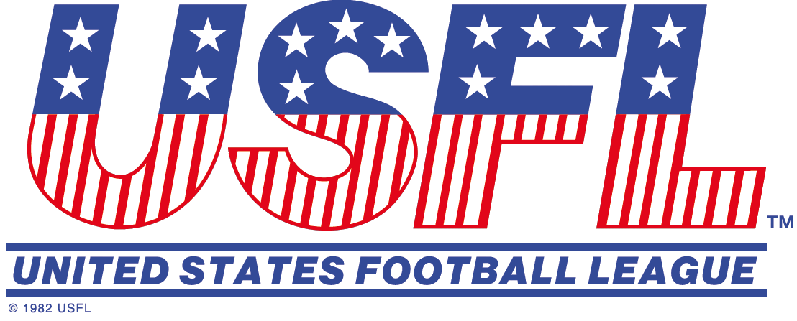
United States
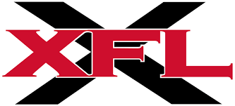
XLF
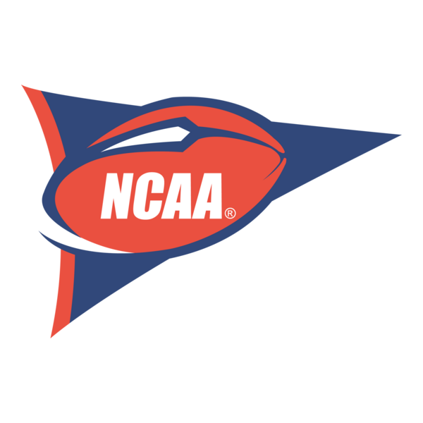
National Collegiate
Canadá
Canadian Football League (CFL): Fundada en 1958, la CFL presenta diferencias en las reglas respecto al fútbol americano estadounidense, como un campo más grande y tres downs en lugar de cuatro. La temporada culmina con la disputa de la Grey Cup, el campeonato más prestigioso del país.
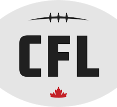
Canadian
México
Liga de Fútbol Americano Profesional (LFA): Además de la temporada regular, la LFA organiza el Tazón México, el partido de campeonato que define al campeón de la liga. La LFA ha contribuido al crecimiento y profesionalización del fútbol americano en México.Organización Nacional Estudiantil de Fútbol Americano (ONEFA): La ONEFA ha sido fundamental en el desarrollo del talento local, sirviendo como semillero para jugadores que posteriormente destacan en ligas profesionales. Sus campeonatos universitarios son altamente competitivos y cuentan con una base de seguidores apasionados.
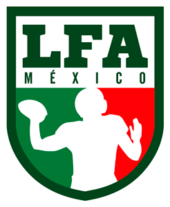
Liga de Fútbol Americano
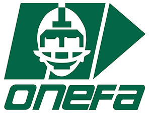
Organización Nacional Estudiantil
Europa
Liga Alemana de Fútbol Americano (GFL): La GFL ha producido equipos de renombre como los New Yorker Lions y los Schwäbisch Hall Unicorns, que han dominado la liga en varias temporadas. Además, la GFL ha sido una plataforma para jugadores europeos que aspiran a jugar en la NFL.Liga Austriaca de Fútbol Americano (AFL): Los Vienna Vikings y los Swarco Raiders Tirol son dos de los equipos más exitosos de la AFL, con múltiples campeonatos en su haber. La liga es conocida por su alto nivel de juego y ha atraído a jugadores internacionales.Campeonato de Francia Élite (Casque d'Or): Equipos como los Thonon Black Panthers y los La Courneuve Flash han sido protagonistas en la liga francesa, contribuyendo al crecimiento del deporte en el país. El Casque d'Or es el trofeo otorgado al campeón de la liga.Liga Británica de Fútbol Americano (BAFL): La BAFA supervisa tanto las competiciones de tackle como las de flag football en el Reino Unido, promoviendo el desarrollo del deporte a nivel juvenil y adulto. La liga ha visto un aumento en la participación y el interés en los últimos años.
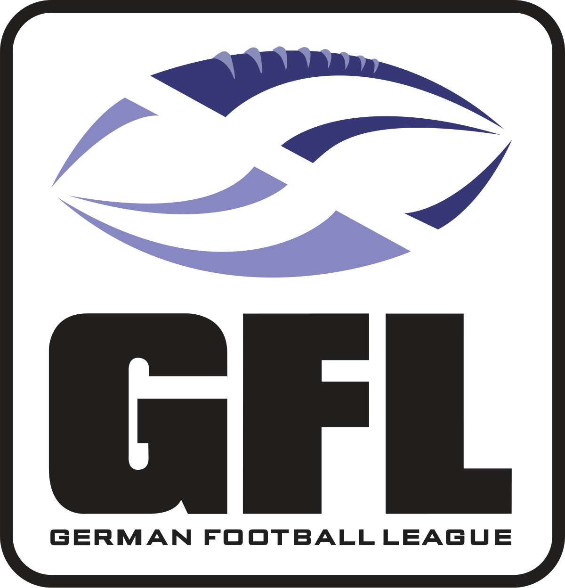
Liga Alemana de Fútbol
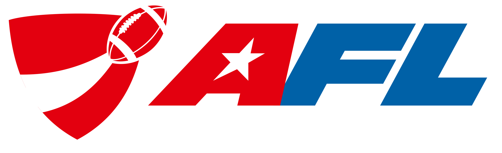
Liga Austriaca de Fútbol
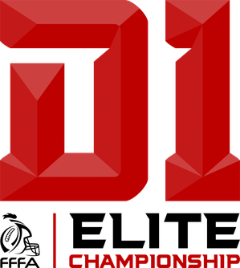
Campeonato de Francia
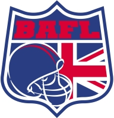
Liga Británica de Fútbol
Brasil
Liga Brasileña de Fútbol Americano (BFA): La BFA se divide en conferencias regionales debido a la vastedad del país, culminando en un campeonato nacional que determina al mejor equipo de Brasil. La liga ha experimentado un crecimiento significativo en popularidad y nivel competitivo.
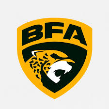
Liga Brasileña de Fútbol
Japón
X-League: Fundada en 1971, la X-League está compuesta por equipos corporativos y clubes, y es reconocida por su organización y calidad de juego. El campeonato culmina con el Rice Bowl, donde el campeón de la X-League enfrenta al campeón universitario.
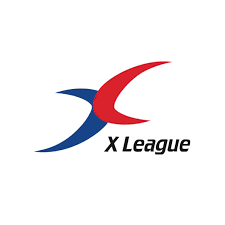
X-League
Competencias Internacionales
Federación Internacional de Fútbol Americano (IFAF): Fundada en 1998, la IFAF organiza torneos internacionales y trabaja para estandarizar las reglas del fútbol americano a nivel mundial. La Copa Mundial de Fútbol Americano se celebra cada cuatro años, reuniendo a selecciones nacionales de diversos países.Campeonato Mundial Universitario de Fútbol Americano (FISU): Además de México, países como Japón y Estados Unidos han participado activamente en este torneo, fomentando el intercambio cultural y deportivo entre estudiantes-atletas de diferentes naciones. El campeonato ha sido clave en la promoción del fútbol americano universitario a nivel global.
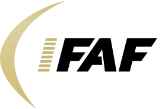
Federación Internacional de
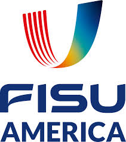
Campeonato Mundial Universitario